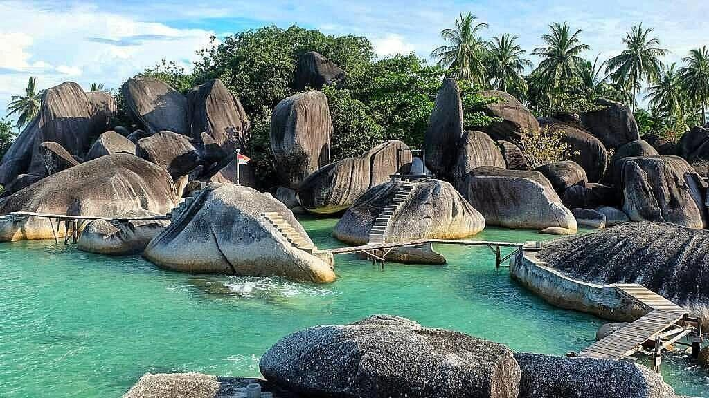

3. Pulau Natuna |
|  |
|
Pulau Natuna adalah sebuah pulau yang terletak di Kepulauan Riau, Indonesia, dan merupakan salah satu bagian dari Kepulauan Natuna yang lebih luas. Pulau ini memiliki daya tarik yang unik dan menawarkan pengalaman alam yang luar biasa. Pulau Natuna adalah permata tersembunyi di Kepulauan Riau, yang belum banyak dikenal oleh wisatawan dunia. Pulau ini terkenal dengan pemandangan alam yang menakjubkan, perairan biru yang jernih, dan keragaman hayati yang mengagumkan. Salah satu daya tarik utama Pulau Natuna adalah keindahan pantai-pantainya. Pantai-pantai pasir putih yang terhampar di sepanjang pantai pulau ini adalah tempat yang sempurna untuk bersantai, berjemur, atau berenang di air laut yang hangat. Pemandangan matahari terbenam di pulau ini juga sangat menakjubkan. Selain pantai-pantainya, Pulau Natuna adalah surga bagi penyelam. Terumbu karang yang sehat dan beragam spesies laut menjadikan Pulau Natuna sebagai destinasi yang sempurna bagi para penyelam yang ingin menjelajahi kehidupan bawah laut yang kaya. Anda dapat menemui ikan-ikan berwarna-warni, terumbu karang yang megah, dan mungkin beberapa spesies laut langka. Pulau Natuna juga menawarkan banyak kegiatan luar ruangan lainnya, seperti hiking, bersepeda, dan berburu fotografi alam. Anda dapat menjelajahi hutan-hutan hijau yang luas dan melihat flora dan fauna yang beragam. Selain kecantikannya, Pulau Natuna juga memiliki budaya lokal yang menarik, yang dapat Anda eksplorasi. Anda dapat berinteraksi dengan penduduk setempat yang ramah dan menjelajahi pasar-pasar tradisional untuk mencicipi kuliner lokal. Pulau Natuna adalah destinasi yang cocok bagi mereka yang mencari ketenangan, petualangan alam, dan pengalaman yang berbeda. Pulau ini menawarkan pengalaman yang tak terlupakan di tengah alam alami Indonesia yang luar biasa. |
Paket WisataHarga tur wisata di Pulau Natuna, yang merupakan salah satu destinasi wisata yang masih relatif kurang dikunjungi di Indonesia, dapat bervariasi tergantung pada berbagai faktor seperti jenis tur, durasi, dan penyelenggara tur. Pulau Natuna terkenal dengan keindahan alamnya, terutama aktivitas di bawah air seperti snorkeling dan diving. Berikut adalah perkiraan harga untuk berbagai jenis tur dan aktivitas di Pulau Natuna: |
| Jenis | Deskripsi |
|---|---|
| Tur Snorkeling dan Diving | Tur harian snorkeling Mulai dari sekitar 300 ribu hingga 700 ribu Rupiah per orang. |
| Diving day trip Harga bisa bervariasi, mulai dari sekitar 700 ribu hingga 1,5 juta Rupiah per orang. | |
| Paket multi-hari untuk diving Harga bervariasi tergantung pada jumlah hari dan penyelenggara tur, mulai dari beberapa juta hingga lebih. | |
| Akomodasi | Penginapan Harga per malam dapat berkisar dari sekitar 200 ribu hingga 700 ribu Rupiah, tergantung pada jenis akomodasi dan fasilitas yang ditawarkan. |
| Transportasi | Tiket pesawat ke Natuna Harga tiket pesawat bervariasi tergantung pada musim dan waktu pembelian. |
| Biaya Masuk Taman Laut Natuna | Biasanya, ada biaya masuk ke taman laut yang akan dikenakan, tetapi biayanya biasanya terjangkau. |
| Biaya Makanan dan Transportasi Lokal | Biaya makanan dan transportasi lokal akan menambah biaya perjalanan Anda. |
|
Harga-harga di atas hanya estimasi, dan harga sebenarnya dapat berubah tergantung pada waktu perjalanan dan penawaran khusus yang mungkin berlaku. Selalu disarankan untuk memeriksa dengan penyelenggara tur dan penginapan tertentu untuk mendapatkan perkiraan harga yang lebih akurat sesuai dengan rencana perjalanan Anda. Pulau Natuna adalah destinasi yang masih berkembang, dan dengan menjaga kelestarian lingkungan, Anda dapat membantu melestarikan keindahan alamnya. |